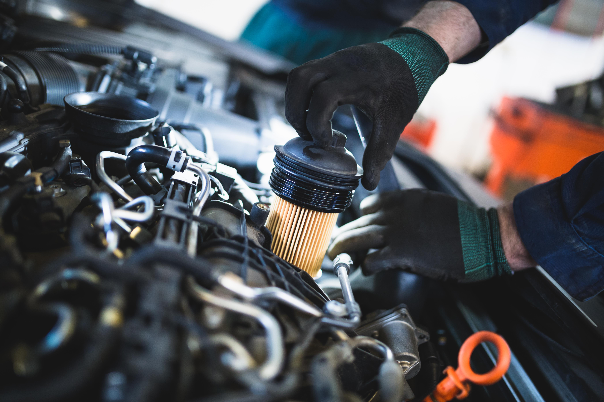

Масляной фильтр

Масляный фильтр используется, практически во все агрегатах, оснащающихся системой смазки с нагнетателем. Масляных фильтров существует несколько видов, каждый из которых рассмотрим подробно. Благодаря фильтру, в нем задерживаются механические примеси, продукты угара масла, стружка и грязь, которая разрушительно влияет на трущиеся поверхности деталей.
Сегодня существует несколько типов фильтров, каждый из которых выполняет не только прямое назначение:
Механический — классический тип, может выпускаться в цельном металлическом корпусе или как отдельный фильтрующий элемент. По виду могут быть бумажными, войлочными, пластинчатыми и так далее;
Гравитационный — отстойник. Представляет собой отдельный корпус, куда помещается фильтрующий элемент. Такую систему вы можете наблюдать на автомобиле “Волга” с двигателем ЗМЗ-402. Смысл состоит в том, что на стенках корпуса фильтра под действием силы тяжести оседают крупные частицы;
Центробежный — часто применяется на крупной технике, например классический представитель — КАМАЗ 740 с дизельным мотором. Благодаря центробежной силе и давлению все частицы оседают на стенках корпуса, поэтому фильтр менее загрязняется;
Магнитный — к корпусу фильтра крепят магнит, который притягивает к себе металлическую стружку. Обычно бывает магнитная пробка поддона.
Ниже приведены автозапчасти от наших партнеров,которые всегда можно заказать/находятся на складе
| Бренд |
Цена (татиты) |
Ср. рейтинг покупателей |
| TurboTrek |
7089 |
6 |
| Axial force |
4463 |
9 |
| Motormax |
5683 |
1 |
| Drive dynamics |
9586 |
10 |
| Revolvetech |
8482 |
3 |
Для покупки/заказа автозапчастей обратитесь в офис или на наши контакты
Не нашли нужный товар обратитесь к шему дежурному менеджеру:+7 (949) 312-92-99 ПН-ПТ с 9 до 17:00. В субботу - до 14:30. Перед выездом за товаром, обязательно уточняйте статус заказа в личном кабинете на сайте или у менеджера. *Благодарим за понимание.